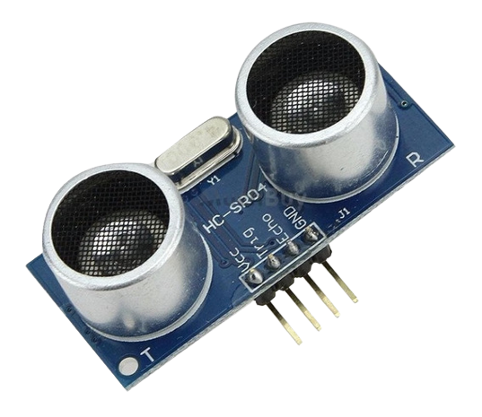
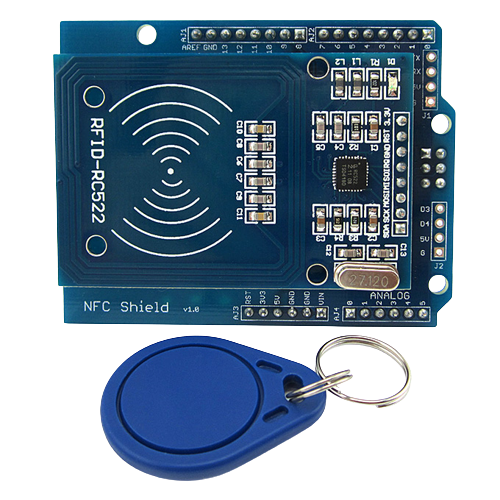

El sensor infrarrojo es un sensor que detecta la presencia de un objeto o persona mediante la emisión de una luz infrarroja. Los sensores infrarrojos son unos componentes electrónicos compuestos normalmente de un LED infrarrojo y un fototransistor colocados uno al lado del otro, de forma que el LED actúa como emisor y el fototransistor como receptor.
El sensor ultrasónico es un sensor que detecta la presencia de un objeto mediante la emisión de una onda sonora. Su funcionamiento consiste en emitir un sonido ultrasónico por uno de sus transductores, y esperar que el sonido rebote de algún objeto presente (el obstáculo) y el eco es captado por el segundo transductor. La distancia es proporcional al tiempo que tarda en llegar el eco.
Su principio de funcionamiento consiste en pasar un TAG, cerca de un lector RFID, el TAG tiene la capacidad de enviar información al lector. Dicha información puede ser desde un simple código o todo un paquete de información guardo en la memoria del Tag.